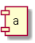
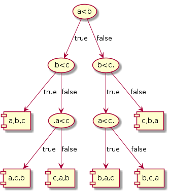

| Prev | Next |
Sorting lower bounds and Linear-time sorting
So far we have seen half a dozen ways to sort. A pertinent question at this stage is: can sorting be done faster than O(nlogn)? The answer is yes and no. In general case, NO. In specific cases, YES.
To understand this we need to first understand the term comparison based sorting. The sorting algorithms dealt so far are all comparison based methods. That is, in order to sort the elements (or keys), we need to compare the elements in some systematic way. Some algorithms, especially the nlogn ones, allow us to minimize the number of comparisons by applying efficient technique such as divide-and-conquer or efficient data structure max-heap.
Lower bounds for comparison based sorting
Can we miminize the number of comparisons beyond a certain extent? Stated otherwise, what is the lower bound on the number of comparisons if we need to order n elements? We will answer this question first using decision trees.
- If we had only one element in the list, no comparisons are required to sort. 
- If we had two elements, one comparion is sufficient to order them.
- If we had three elements, at most three comparisons are necessary. To see this consider the decision tree below. 

Upon closer look at the three cases we observe that the number of leaves of the decision trees is equivalent to the number of ways in which the n elements can be ordered. Also, each path from root to leaf gives the number of comparisons that needs to be performed to decide a specific ordering. For n = 3, it takes at most 3 comparisons.
Given n, there are n! ways of ordering them. Hence, the desicion tree would have n! leaves. Since each comparison divides the ordering possibilities by at least half, the height of the decision tree is at most log n!.
log n! = log (n.n-1.n-2.....2.1) = log n + log n-1 + .... + log 2 + log 1 = Θ(nlogn)
Hence we can say log n! = Ω(nlogn). Stated otherwise, the minimum number of comparisons required to sort n elements is Ω(nlogn). For the work out of the complexity, please refer to any standard book on algorithms.
Linear-time Sorting
In special scenarios, sorting can be done in linear-time since comparison based sorting is not necessary. Bucket sort and radix sort belong to this category.
Bucket Sort
Bucket sort is used when we want to sort entities based on an attribute or kind or enumerated type. For example, lets say we want to sort T-shirts based on its size XS, S, M, L and XL, we can use 5 buckets, one for each type. While picking each T-shirt, check its size and put it in the appropriate bucket.
This strategy can also be employed for sorting integers in the following manner. Suppose we know the numbers to be sorted fall within the range 1-100. We can create 10 buckets for storing them in a range of 10 numbers.
1-10 |
11-20 |
21-30 |
31-40 |
41-50 |
51-60 |
61-70 |
71-80 |
81-90 |
91-100 |
(1) The numbers are initially scanned once and put in appropriate bucket based on the range.
(2) This is followed by another round where each bucket is individually sorted.
(3) In the final step all the buckets are combined from left to right.
Rounds 1 and 3 take linear time. Round 2 determines the time complexity. If the elements are distributed more or less equally in each bucket after the first round, it will reduce the number of comparisons in the second round. The worst case happens when all the elements end up in the same bucket in which case the second round will take O(nlogn).
Insertion sort can be used along with bucket sort to speed up the sorting. After round 1 of bucket sort, the buckets can be concatenated and insertion sort can be applied as it is very effective if the elements are in an almost sorted state.
Radix Sort
Radix sort is another non-comparison based sorting algorithm that uses buckets in a different fashion to sort the elements in a lexicographic fashion and putting in the appropriate bucket. The following example demonstrates this for binary numbers. No doubt this strategy can be extended for integers and character strings too. The number of buckets will vary.
Suppose we want to sort 4-digit binary numbers: 1001, 0110, 1010, 1101.
INIT STEP: Since the number of digits is 2 (i.e. 0 and 1), we need 2 buckets. Lets initialize the buckets.
0-bucket |
1-bucket |
SORT STEP: Scan the numbers from left-to-right based on the least significant digit (LSD). If LSD is 0, put it in the 0-bucket. If 1, put it in the 1-bucket.
0110,1010 0-bucket |
1001,1101 1-bucket |
Repeat SORT STEP based on the next digit till the most significant digit (MSD). The numbers are read from left-to-right.
1001,1101 0-bucket |
0110,1010 1-bucket |
1001,1010 0-bucket |
1101,0110 1-bucket |
0110 0-bucket |
1001,1010,1101 1-bucket |
Now all the elements are in sorted order (read from left-to-right): 0110, 1001, 1010, 1101.
It takes O(1) time to initialize the buckets with the assumption that the number of digits is a known constant (say k). This is followed by k iterations, where the elements are scanned from left-to-right in each bucket and putting them in the appropriate bucket. It takes kn operations which results in O(n) time.
The disadvantage with radix sort is it cannot be done in-place. At least two sets of buckets are necessary to move the elements back-and-forth during the iterations making it memory-intensive and slows down.